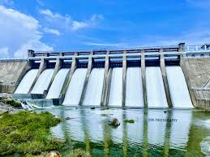

THIRUVANNAMALAI
SATHANUR DAM

Sathanur Dam's history is rooted in India's First and Second Five Year Plans. Proposed in the First Five Year Plan, construction began in 1955 and the dam was completed and inaugurated by Tamil Nadu Chief Minister K. Kamaraj in 1958. Built across the Thenpennai (or Pennaiyar) River in Tiruvannamalai District, the gravity dam was a major irrigation project intended to enhance water supply, irrigation, and flood control for the region.